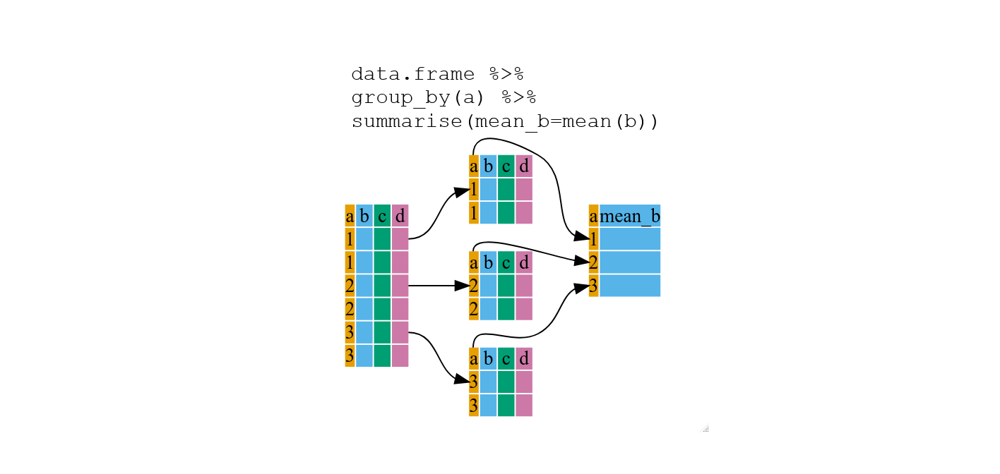

dplyr
Set up
How to open a saved Rproj and read in data if not already open
Open your saved Rproj in Rstudio by clicking File menu then Open project and look for your .Rproj file. Click the Files tab in the bottom right pane, click the data folder and check the penguins.csv is in there. Then read it in.
penguins <- read.csv(file = "data/penguins.csv")1 Data wrangling
 Artwork by @allison_horst
Artwork by @allison_horst
Cleaning or wrangling data means many things to many researchers: we often select certain observations (rows) or variables (columns), we often group the data by a certain variable(s), or we even calculate summary statistics. We can do these operations using the normal base R functions:
mean(penguins[penguins$species == "Adelie", "body_mass_g"], na.rm = TRUE)
mean(penguins[penguins$species == "Gentoo", "body_mass_g"], na.rm = TRUE)
mean(penguins[penguins$species == "Chinstrap", "body_mass_g"])But this isn’t very nice because there is a fair bit of repetition. Repeating yourself will cost you time, both now and later, and potentially introduce some nasty bugs.
1.1 The
dplyr package

Luckily, the dplyr
package provides a number of very useful functions for manipulating
dataframes in a way that will reduce the above repetition, reduce the
probability of making errors, and save you some typing. As an added
bonus, you might even find the dplyr grammar easier to
understand.
Here we’re going to cover 5 of the most commonly used functions as
well as using pipes (%>%) to combine them.
select()filter()group_by()summarize()mutate()
If you have not installed this package previously, use the packages tab, bottom right.
Then load the package:
library("dplyr")1.2 select()

If we wanted to analyse only a few of the variables (columns) in our
dataframe we could use the select() function. This will
keep only the variables you select.
species_body <- select(penguins, species,body_mass_g,sex)If we open up species_body (under the environment tab)
we’ll see that it only contains the species, body mass and sex.
1.3 filter()
If we now wanted to use the columns selected above, but only with
Adelie penguins, we can use filter
species_body_adelie <- filter(species_body, species =="Adelie")Open species_body_adelie to check it only contains
Adelie penguin data.
Above we used ‘normal’ grammar, but the strengths of
dplyr lie in combining several functions using
pipes.
To demonstrate a pipe (%>%) let’s repeat what we’ve
done above by combining select and filter in
one command.
species_body_adelie2 <- penguins %>%
filter(species == "Adelie") %>%
select(species, body_mass_g, sex)First we assign the result to species_body_adelie2.
Then, we call the penguins dataframe and pass it on, using the pipe
symbol %>% to the filter() function. We
don’t need to name which data object to use in the filter()
function since we’ve piped penguins in. Then the resulting
data frame is piped into the select() part of the code.
Pipes allow you to do many actions in one command, make code easier to read and avoid creating multiple data objects.
Challenge 1
Write a single command (which spans multiple lines and include pipes) that will produce a dataframe that has the Gentoo values for
island,flipper_length_mmandyear, but not for other penguins. How many rows does your dataframe have?
Check your answer to Challenge 1
You should have 124 rows (look in the environment tab in the top right window to check this).
Note: The order of operations is very important in this case. If we used ‘select’ first, filter would not be able to find the variable species since we would have removed it in the previous step1.4 group_by() and summarize()
If we want to do the above for each species, we’d have to repeat the
code but we’re trying to reduce the error prone repetitiveness of what
can be done with base R. In other words, using filter(),
will only pass observations that meet your criteria (in the above:
species=="Adelie"). Instead, we can use
group_by(), which will analyse all three species.

1.4.1 Using group_by() with summarize()
group_by() is more easily understood when it’s used with
something like summarize(). By using the
group_by() function, we split our original data frame into
multiple pieces, then we can run functions (e.g. mean() or
sd()) within summarize().

penguins %>%
group_by(species) %>%
summarize(mean_body = mean(body_mass_g, na.rm=TRUE))## # A tibble: 3 × 2
## species mean_body
## <chr> <dbl>
## 1 Adelie 3701.
## 2 Chinstrap 3733.
## 3 Gentoo 5076.Tip: To assign or not
Starting the code with
species_body_means <- will assign the results
as a new data frame called species_body_means.
This species_body_means will then be listed
under the environment tab so you can view it. Good for large results
data frames.
As was done in the last example, you can choose not to assign as an object if the resulting data frame is small. The results are not saved but given in your console window.
The function group_by() allows us to group by multiple
variables. Let’s group by species and
sex.
penguins %>%
group_by(species, sex) %>%
summarize(mean_body = mean(body_mass_g, na.rm=TRUE))And you’re not limited to analysing only one variable with only one
function in summarize().
penguins %>%
group_by(species, sex) %>%
summarize(mean_body = mean(body_mass_g),
sd_body = sd(body_mass_g),
mean_flipper = mean(flipper_length_mm),
sd_flipper = sd(flipper_length_mm))The filter() function can remove the penguins who have
NA under sex. (Read the exclamation mark as “not”)
penguins %>%
group_by(species, sex) %>%
filter(!is.na(sex)) %>%
summarize(mean_body = mean(body_mass_g),
sd_body = sd(body_mass_g),
mean_flipper = mean(flipper_length_mm),
sd_flipper = sd(flipper_length_mm))Challenge 2
For each species and sex, calculate the mean and sd of bill length and bill depth.
Exporting such information as a journal style table is useful as it can be added to Word documents for assessments.
Challenge 3
Write code that takes the table you created in Challenge 2, formats it using
gt()function and exports it as a html file usinggtsave(), saving it in your results folder. The table should look like the below.
| Species | Sex | Mean Bill Length | SD Bill Length | Mean Bill Depth | SD Bill Depth |
|---|---|---|---|---|---|
| Adelie | female | 37.25753 | 2.028883 | 17.62192 | 0.9429927 |
| Adelie | male | 40.39041 | 2.277131 | 19.07260 | 1.0188856 |
| Chinstrap | female | 46.57353 | 3.108669 | 17.58824 | 0.7811277 |
| Chinstrap | male | 51.09412 | 1.564558 | 19.25294 | 0.7612730 |
| Gentoo | female | 45.56379 | 2.051247 | 14.23793 | 0.5402493 |
| Gentoo | male | 49.47377 | 2.720594 | 15.71803 | 0.7410596 |
Solution to Challenge 2 and 3
Create a summary table
penguinSummary <- penguins %>%
group_by(species, sex) %>%
filter(!is.na(sex)) %>%
summarize(
mean_billlength = mean(bill_length_mm),
sd_billlength = sd(bill_length_mm),
mean_billdepth = mean(bill_depth_mm),
sd_billdepth = sd(bill_depth_mm),
.groups = "drop"
)
formatted_table <- penguinSummary %>%
gt() %>%
cols_label(
species = "Species",
sex = "Sex",
mean_billlength = "Mean Bill Length",
sd_billlength = "SD Bill Length",
mean_billdepth = "Mean Bill Depth",
sd_billdepth = "SD Bill Depth"
) %>%
tab_options(column_labels.border.top.color = "black",
column_labels.border.bottom.color = "black",
table_body.border.bottom.style = "none",
table.border.bottom.color = "black",
table_body.hlines.style = "none")Format the table
formatted_table <- penguinSummary %>%
gt() %>%
cols_label(
species = "Species",
sex = "Sex",
mean_billlength = "Mean Bill Length",
sd_billlength = "SD Bill Length",
mean_billdepth = "Mean Bill Depth",
sd_billdepth = "SD Bill Depth"
) %>%
tab_options(column_labels.border.top.color = "black",
column_labels.border.bottom.color = "black",
table_body.border.bottom.style = "none",
table.border.bottom.color = "black",
table_body.hlines.style = "none")Save the table
gtsave(formatted_table, "results/penguin_summary_table.html")1.5 count() and n()
If we wanted to check the number of penguins included in the dataset
for the year 2007, we can use filter() then the
count() function:
penguins %>%
filter(year == 2007) %>%
countIf we need to use the total number of observations in calculations,
the n() function is useful. For instance, if we wanted the
standard error of body mass per species:
penguins %>%
group_by(species) %>%
summarize(se_body = sd(body_mass_g)/sqrt(n()))This works better if we filter out the NAs.
penguins %>%
group_by(species) %>%
filter(!is.na(body_mass_g)) %>%
summarize(se_body = sd(body_mass_g)/sqrt(n()))Tip: Standard error
To calculate standard error (se), the standard deviation (sd) is divided by the square root of the sample size (n). \(se = sd/\sqrt n\)
1.6 mutate()
 Artwork by @allison_horst
Artwork by @allison_horst
mutate() creates new variables (columns) from existing variables.
penguins_body_kg <- penguins %>%
mutate(body_weight_kg = body_mass_g / 1000)1.6.1 Connect mutate with case_when
We can combine mutate() with case_when() to
filter data in the moment of creating a new variable. (Note:
case_when() is an alternative to the older
ifelse() function.)
We can make a new column of data that categorises each Gentoo penguin as either large or small and all other penguins as “not Gentoo”. To do this, we use information in the species and body mass columns.
penguin_gentoo_bodysize <- penguins %>%
mutate(
size = case_when(
species == "Gentoo" & body_mass_g >= 5000 ~ "large",
species == "Gentoo" & body_mass_g < 5000 ~ "small",
TRUE ~ "not Gentoo"
)
)Size is our name for the new column. You can read ~ as
“then write”. The last line of code can be read as “if none of the
conditions are TRUE then write not Gentoo”.
Advanced Challenge
Write code to select only the species, island, flipper length and sex variables. Filter to only the Adelie penguins. Filter out the penguins with NA under flipper length. Group the data by island. Use mutate to create a new flipper length column in cm by dividing the flipper length by 100. Summarise the mean and sd of flipper lengths for each of the islands.
Solution to Advanced Challenge
penguins %>%
select(species, island, flipper_length_mm, sex) %>%
filter(species == "Adelie") %>%
filter(!is.na(flipper_length_mm)) %>%
group_by(island) %>%
mutate(flipper_cm = flipper_length_mm/100) %>%
summarise(flipper_mean_cm = mean(flipper_cm),
flipper_sd = sd(flipper_cm))## # A tibble: 3 × 3
## island flipper_mean_cm flipper_sd
## <chr> <dbl> <dbl>
## 1 Biscoe 1.89 0.0673
## 2 Dream 1.90 0.0659
## 3 Torgersen 1.91 0.06231.7 Handling missing values
If there are blank cells in the file you read into R, it will fill them in with NA.
We have seen that some functions use the NA remove argument to deal with NA values, as below.
mean(penguins[penguins$species == "Adelie", "body_mass_g"], na.rm = TRUE)The filter function used !is.na read as “not is NA”.
penguins %>%
group_by(species, sex) %>%
filter(!is.na(sex))An alternative is using na.omit()
clean_data <- na.omit(penguins)Caution!
Be aware thatna.omit() removes the entire row of data
even if there is an NA value in a variable you are not using.
If missing values are coded as an extreme value such as 999, you must change them to NA.
ExampleData[ExampleData == 999] <- NATip: missing values
Be careful using 0. Zero should mean the measurement was 0 units oppose to missing data.
1.8 Other great resources
- R for Data Science
- Data Wrangling Cheat Sheet
- Introduction to dplyr
- Data wrangling with R and RStudio
Adapted from R for Reproducible Scientific Analysis licensed CC_BY 4.0 by The Carpentries